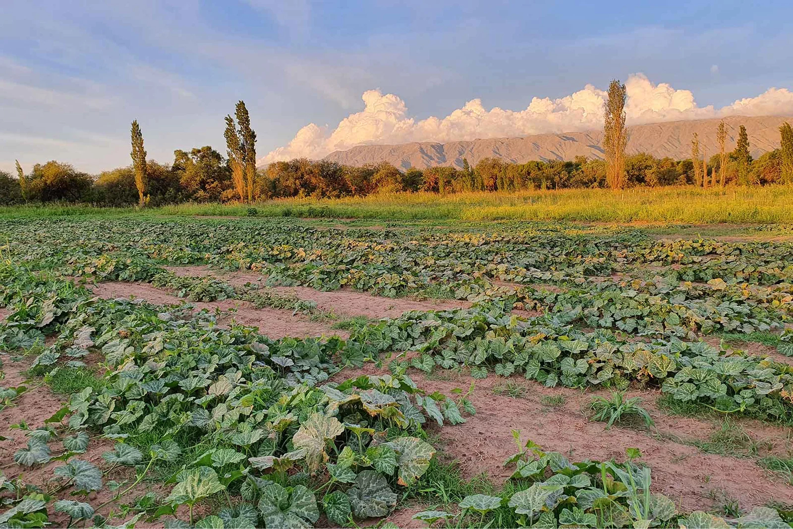

Quiénes somos
Constelación es una Semillería agroecológica que trabaja de forma colaborativa, abierta al diálogo con todos los actores de la cadena productiva, brindados al servicio de la agricultura.
Juntos integramos una Red de Multiplicadores de Semillas de pequeños productores, ubicados en diferentes provincias del País, quienes producen las semillas en forma cuidada y coordinada, y Constelación se encarga de que estas semillas lleguen a ti — de agricultor a agricultor o huertero familiar.